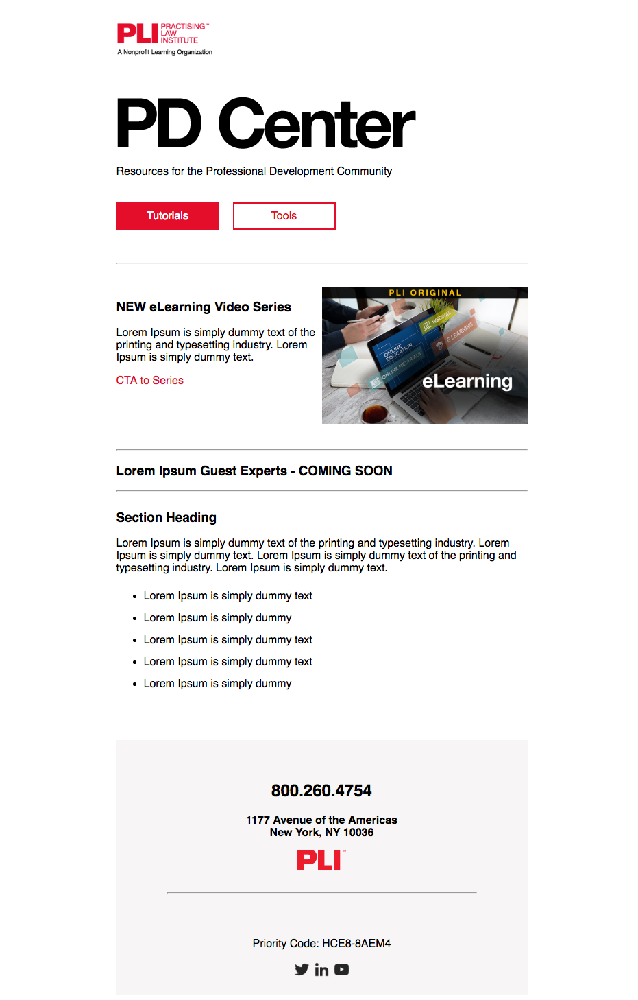

Professional Development Center
I've created the product map, developed the interface for video series, crafted and incorporated a system for measuring KPI, and performed integration with Pardot. I quantified the user research and presented to the team so they could develop material in line with customers' expressed desires. I also concepted and executed the overall site from UX to UI to visuals and graphics.
See Live Site
Product Designer, Developer, Art Director and Project Lead
- Art Direction
- Content Creation Management
- UI / UX / Visual / Interaction Design
- Site Development
- Pardot Integration
- Metrics Design & Management
- Email Marketing Design
- Practising Law Institute
- Live: http://learning.pli.edu/PDCenter
- Concept development: https://maitrishah25.github.io/pd3/
This site aims to engage a new sector of the market, the legal PD community, by offering free resources and insights from thought leaders in the industry.
I quantified ~40 pages of user research collected by the sales team. To tabularize the users' stated interests, I took repeatedly mentioned topics and created broad bucket categories, and then tallied and ranked them by volume of requests. I then presented this ranked list to the team so that products developed aimed toward customer needs. This provided significant insight on content direction for their production schedule and so we could ultimately work toward a product/market fit.
I somehow needed to display the video products on the website. I used the categories from the user research to group the videos into relevant categories.
Video Series are Analogous to...
...TV shows! The series are like shows, and single videos are like episodes! From this I got the idea to use popular TV streaming platforms as inspiration for developing the interface. I looked at:
- YouTube
- Amazon Prime
- YouTube TV
I figure taking inspiration from these platforms would provide the user a more familiar and therefore intuitive experience. Features I added to make a more seamless experience:
- Access the next and previous videos without leaving the video modal mode
- Move from one series landing page directly to the next
Having a strong design system to work with was essential, so I extensively explored options before selecting one that gave me the flexibility to apply our Swiss style brand concept and also to build responsively so that elements displayed properly from mobile to desktop.
Our PD Center marketing is handled in-house by our marketing team, and I designed and coded a responsive email blast to alert all our users to the newly available content.
